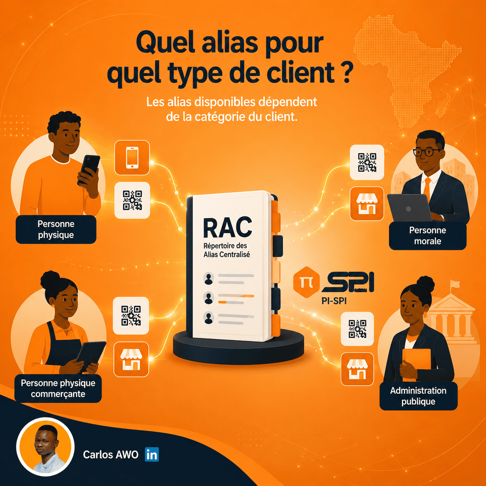
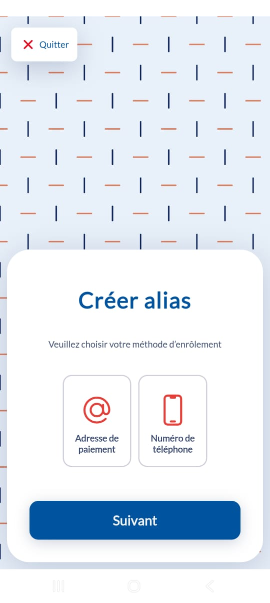
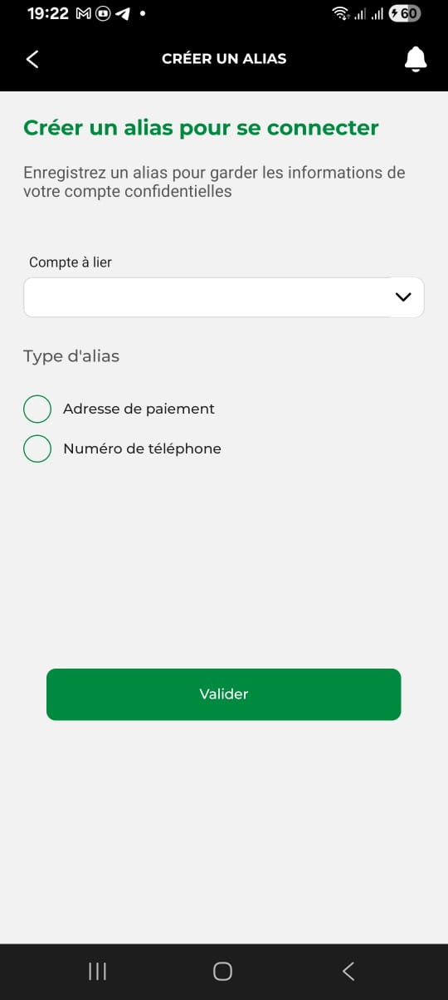

Quel alias pour quel type de client ? (6/30)

On a vu les trois types d'alias que gère le RAC. Ce qui détermine lesquels un client peut créer, ce n'est pas la catégorie du participant (banque, EME, IMF, EP peuvent tous proposer les mêmes alias) — c'est la catégorie du client lui-même.
PI-SPI classe les clients en 4 catégories :
- → Personne physique (type P) — un particulier classique
- → Personne physique commerçante (type C) — un particulier avec une activité commerciale
- → Personne morale (type B) — une entreprise
- → Structure d'administration publique (type G) — un organisme gouvernemental
Ce que voit un particulier
Pour une personne physique, le choix se limite à deux options, comme le montrent les captures ci-dessous : l'adresse de paiement (le SHID, généré automatiquement) ou le numéro de téléphone (le MBNO). Mais attention, ce n'est pas un choix à somme égale : opter pour un SHID donne un seul alias, alors qu'opter pour un MBNO en donne deux — le SHID est de toute façon généré automatiquement en plus, pour les paiements par QR code. Une personne physique ne peut pas créer de MCOD : ce type d'alias ne lui est tout simplement pas accessible.


Avant même de choisir le type d'alias, il faut d'abord sélectionner le compte auquel l'alias va être lié — on le voit bien sur la seconde capture, avec le champ « Compte à lier » affiché avant même le choix du type d'alias. C'est un point qui mérite d'être répété : l'alias n'est pas le compte, il y est simplement rattaché. Le compte existe indépendamment, avec son solde et ses détails bancaires gérés par le participant qui le tient ; l'alias vient s'y greffer comme un identifiant public, révocable ou remplaçable, sans jamais se substituer au compte lui-même.
Ce que voient les trois autres catégories
Pour la personne physique commerçante, la personne morale, et l'administration publique, le choix porte sur le SHID et le MCOD. Le MBNO n'est pas disponible pour elles : logique, puisque cet alias est rattaché à un numéro de téléphone individuel, pas à une structure.
Une différence importante de volume : une personne physique reste sur une logique d'un seul choix initial (SHID seul, ou MBNO qui entraîne un SHID). Les trois autres catégories peuvent créer plusieurs alias pour un même compte, avec une limite fixée par défaut à 20, ajustable auprès du participant si le besoin dépasse ce quota — utile par exemple pour une entreprise qui veut un MCOD différent par point de vente.
Deux autres différences pratiques valent la peine d'être connues. D'abord, pour une personne morale, le champ Ville est obligatoire à la création de l'alias — il ne l'est pas pour un particulier. Ensuite, la préconfirmation (une confirmation préalable des réceptions de transferts, avant que les fonds soient définitivement crédités) n'est disponible que pour les personnes morales — un particulier ne peut pas activer cette option.
Le MCOD, pensé pour l'USSD
Le MCOD est pensé pour les parcours de paiement USSD — ces menus accessibles par simple code sur un téléphone classique, sans app ni connexion data, l'un des trois canaux officiels de PI-SPI aux côtés de l'app mobile et du web.
Attention à ne pas confondre canal et type d'alias : un particulier qui crée son propre alias depuis un menu USSD obtient un SHID ou un MBNO, exactement comme s'il utilisait une app — le canal USSD ne restreint pas le type d'alias qu'un particulier peut créer. Le MCOD entre en jeu de l'autre côté de la transaction, quand ce même client veut payer un marchand : un menu USSD navigue avec des chiffres, pas avec un scan de QR code ni une longue chaîne de 36 caractères comme le SHID. Un identifiant marchand court, choisi par le participant, est ce qui rend possible de désigner un commerçant dans un menu USSD sans que le client ait à taper une adresse de paiement illisible sur un clavier numérique.
Ça résume bien la logique d'ensemble : le SHID et le MBNO sont les alias qu'un particulier choisit lui-même. Le MCOD, lui, est généré et attribué par le participant pour un client professionnel — une décision produit qui se prend en amont, pas une option que l'utilisateur sélectionne dans une liste.
Glossaire
- Client de type P
- Personne physique, particulier.
- Client de type C
- Personne physique commerçante.
- Client de type B
- Personne morale (entreprise).
- Client de type G
- Structure relevant de l'administration publique.
Sources
- Comprendre les alias de compte PI-SPI, guide développeur BCEAO — developer.pispi.bceao.int/guides/alias-overview
- Gérer vos alias via l'API Business, guide développeur BCEAO — developer.pispi.bceao.int/guides/alias-gerer
- Foire aux questions PI-SPI (BCEAO) — catégories de clients P/C/B/G — pispi.bceao.int/foire-aux-questions
- L'alias, page dédiée PI-SPI (BCEAO) — pispi.bceao.int/lalias
- Accueil PI-SPI (BCEAO) — accès multicanal (app, web, USSD) — pispi.bceao.int/accueil
- Spécification API Business PI-SPI (schéma AliasCreationDemande) — champ Ville obligatoire pour personnes morales — document projet